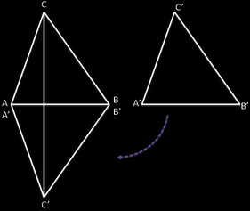

Il terzo criterio di congruenza
Teorema 2.2.4 (Terzo criterio di congruenza). Due triangoli sono congruenti se hanno i tre lati ordinatamente congruenti. □.
If two triangle have all three sides respectively congruent, they are congruent. This is sometimes called the side-side-side (SSS) criterion.
AB ≌ A'B', BC ≌ B'C', AC ≌ A'C' ⇒ ABC ≌A'B'C'
Dim. Abbiamo due triangoli, ABC e A'B'C', dei quali sappiamo che i lati dell’uno sono congruenti ai lati dell’altro.
Ribaltiamo il triangolo A'B'C' e portiamo il segmento A'B' sul segmento AB in modo che il punto A' coincida con A, il punto B' coincida con B (ciò è possibile in quanto AB ≌ A'B') ed in modo che il punto C' cada nel semipiano individuato dalla retta AB opposto a quello in cui si trova C. Uniamo C con C'.
Il triangolo ACC' è isoscele sulla base CC', perché AC ≌ A'C', quindi AĈ'C ≌ AĈC', perché angoli alla base di un triangolo isoscele.
Anche il triangolo C'BC è isoscele slla base CC', perché BC ≌ B'C', quindi C'ĈB ≌ CĈ'B, in quanto anch'essi sono angoli alla base di un triangolo isoscele.
Sommando coppie di angoli congruenti, otteniamo ancora angoli congruenti, quindi AĈ'C + CĈ'B ≌ AĈC' + C'ĈB, cioè Ĉ ≌ Ĉ'.
I triangoli ABC e ABC' hanno:
Ĉ ≌ Ĉ' per la deduzione precedente;
AC ≌ AC' perché ACC' è isoscele;
BC ≌ BC' perché BCC' è isoscele.
Pertanto, sono congruenti per il primo criterio. □
Attenzione! Negli enunciati dei tre criteri di congruenza è essenziale l’avverbio ordinatamente. Esso indica che i lati congruenti devono essere opposti ad angoli congruenti e gli angoli congruenti a lati congruenti.